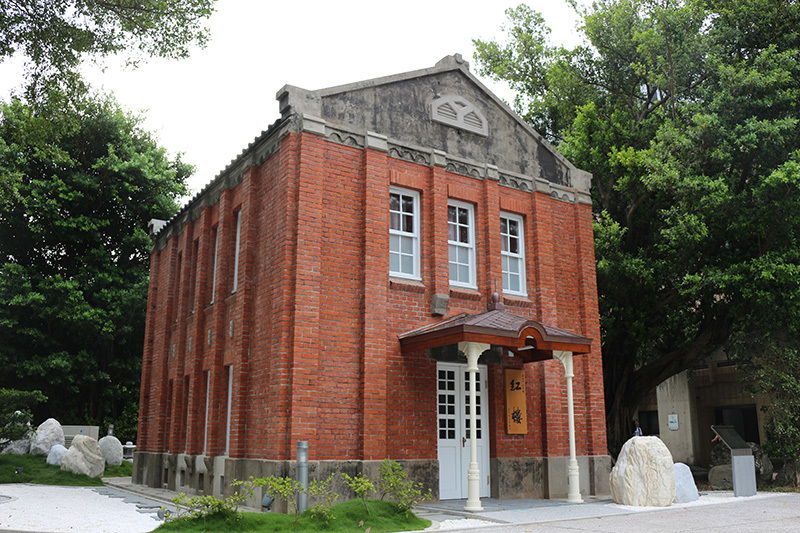

Introduction
History & Philosophy
Established in 1912, Taipei Tech is among one of the oldest universities in Taiwan.
It was first established during the Japanese Colonial Period as the Auxiliary Industrial Institute of the Education Affairs Office of the Civil Administration Department. The Institute consisted of only three departments (Woodcraft, Metalwork and Electrical Engineering) ushered in an era of industrial education in Taiwan. In 1948 the school was renamed as Provincial Taipei Institute of Technology providing five-year associate degree programs. In 1997, the school was promoted to University status, and was renamed as National Taipei University of Technology (Taipei Tech). And now Taipei Tech currently offers 19 undergraduate programs, 26 master programs and 17 Ph.D. programs within 6 colleges.
bold
strong
italic
ins
del
send mail
+47 333 78 901
go to section 1